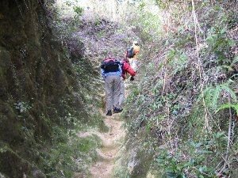
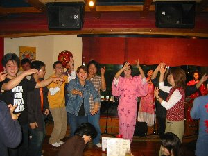
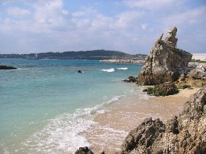

沖縄アクティビティ２ | |
|---|---|
| 前ページの続きです。読まれていまい方は、先に前のページをご覧下さい。 | |
 海苔巻きと中身汁 |  やんばるへの登山道 |
| お昼を自然塾で頂きます。今日は沖縄風海苔巻と中身汁です。海苔巻の中身はチーズとベーコン（ハム？）でした。これが美味しい。 さて午後はやんばるの玉辻岳までトレッキング。やんばるの自然について聞きながら、ゆっくりと登ります。途中、昔馬で木材などを運んだ道、馬車（うまみち）などを見たり、蓋が付いている巣に住む蜘蛛の巣を見たりしました。 | |
 この小さな穴が蜘蛛の巣 比嘉さんが蓋をそっと開けてくれました |  民謡酒場で後ろの方で踊るシュガー |
| 1/4 予報では曇りとなっていたが、晴れ間の中、「体験ダイビング」に参加。本当は慶良間諸島まで行きたかったのだが、波が荒れていて船が出ない。本島の海岸でさえ出来ない。 との事で、本島北部、名護市よりちょっと北の崎本部で潜る事になりました。ココは通称「ゴリラチョップ」と呼ばれるところです。（ゴリラがチョップしているような岩があるから） なんせ、二人ともダイビングは初めて。美人インストラクターのお姉さんに器材の扱い方、呼吸の仕方、耳抜きの仕方等々の講習を受け、ウエットスーツを着込み、ボンベを背負い海に入ります。そんなに水は冷たくありません。 潜り始めると、耳がキーンとなり、急いで先ほど教わった耳抜きを開始！ 始めはなかなか思ったように動けなかったが、しばらくするとコツを掴み、珊瑚に近づいたりしてました。 しばらく泳いでいると問題発生！ シュガーが居ません。水中メガネは前しか見えないし、私もインストラクターの後についていたので、後ろを見ていなかったのですが。インストラクターさんの止まれの合図。しばらくするとひょっこり現れました。 後で聞いたところ、海の中で迷子になり、一度海上に浮上したとの事。 | |
 海中から海面を見てます |  インストラクターが魚の名前を教えてくれます |
| さすが沖縄の海はきれいです。魚もいっぱい！海の中から海面を見ると、きらきらしていました。なんか本当に別世界って感じです。インストラクターが書いている魚の名前は「おじさん」です。 30分は瞬く間に過ぎ、後ろ髪を引かれる思い出陸に上がりました。Ｃ級ライセンスを持っていると、もっと深いところなどにも行けると言う事です。Ｃライ欲しいな〜 お昼は近くの「沖縄そばならココが一番！」という「きしもと食堂」へインストラクター共々行きました。これはカツオだしが効いていて本当に旨い！ 実は沖縄到着後、空港で沖縄そばを食べたのですが、伸びたうどんのような感じで美味しくなかったので、期待はしてなかったのですが、いや、これを知らずに帰って、「沖縄そば美味しくないよ」なんて言わなくて良かったです。 この後、ショップに帰る途中で私の携帯が無いことに気づく。海岸まで戻って探してもらい、なんとか海岸で発見！ブルートライさんにはお世話になりました〜 ダイビングショップ「ブルートライ」http://www.bluetry.com/ そんな感じで沖縄また行きたいです。ダイビングもしたいです。 | |
 これは分かるでしょう こんな海の中を泳ぎます |  ダイビングした海 右に見えるのがゴリラチョップ 分かる？？ |